Создание соединения c хостом kubsu-dev.ru по стандартному порту 80 в протокле сетевой печати RAW с помощью программы Putty

Получение главной страницы сайта kubsu-de.ru методом GET по протоколу HTTP 1.0
По умолчанию сервер отвечает по протоколу HTTP 1.1
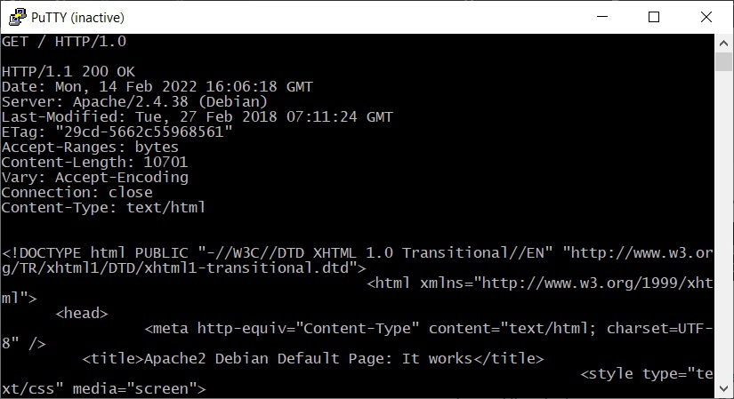
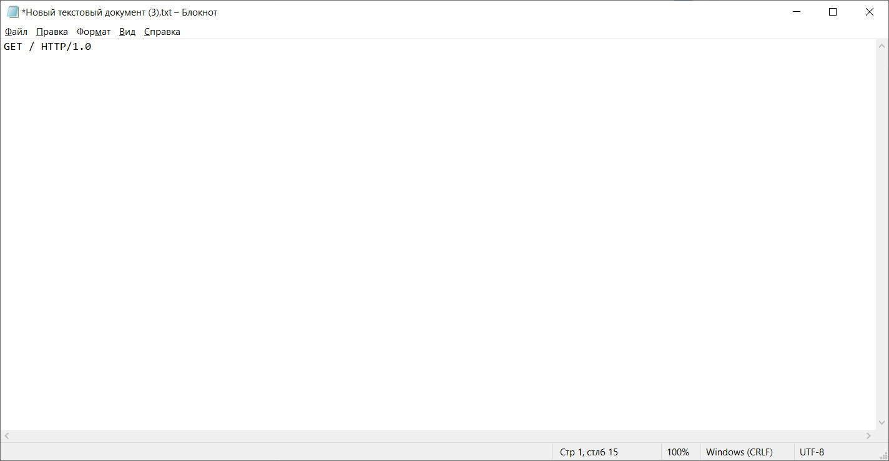
Получение внутренней страницы сайта u46878.kubsu-de.ru методом GET по протоколу HTTP 1.1
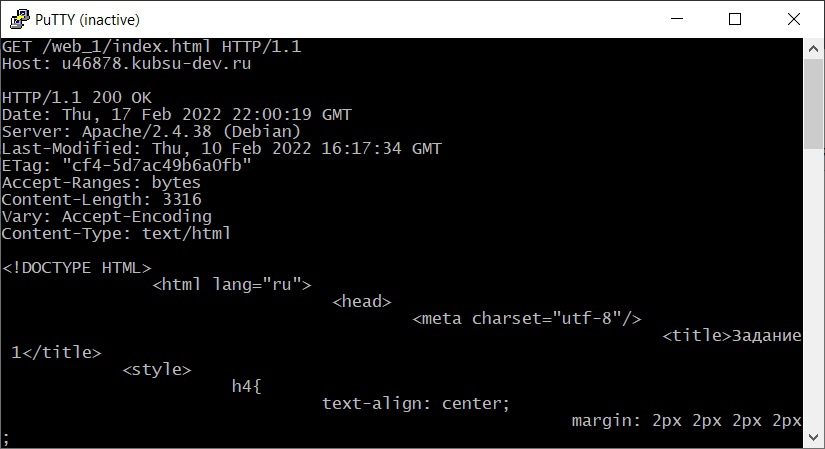
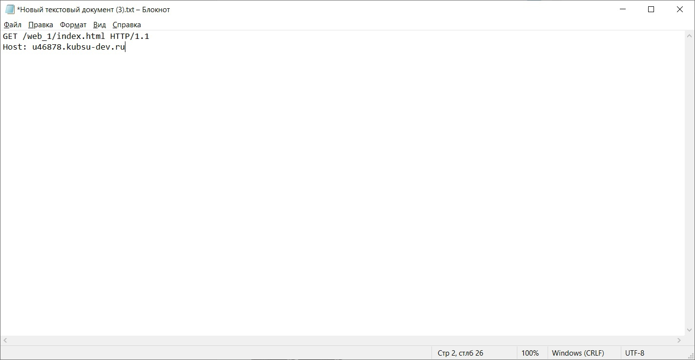
Получение информации о файле file.tar.gz. Для получения информации о файле был использован HEAD запрос
Необходимо было узнать размер файла не скачивая его. Данная информация содержится в заголовке ответа в графе "Content-Length" и состовляет 11335 байт
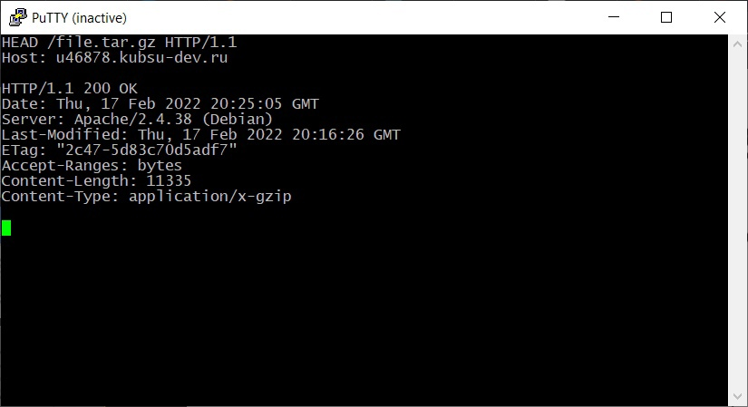
Определение медиатипа ресурса image.png расположенного на удаленном сервере. Для определения медиатипа был использован HEAD запрос
Данная информация содержится в заголовке ответа в графе "Content-Type"
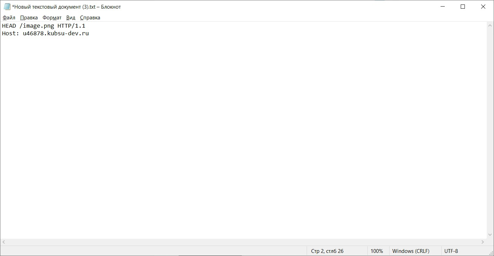
Отправка комментария на удаленный сервер по адрессу u46878.kubsu-dev.ru/index.php. Для отправки комментария был использован POST запрос в теле которого был указан сам комментарий.
В ответе от сервера был получен отправленный комментарий, а также строка с текстом Hello world
 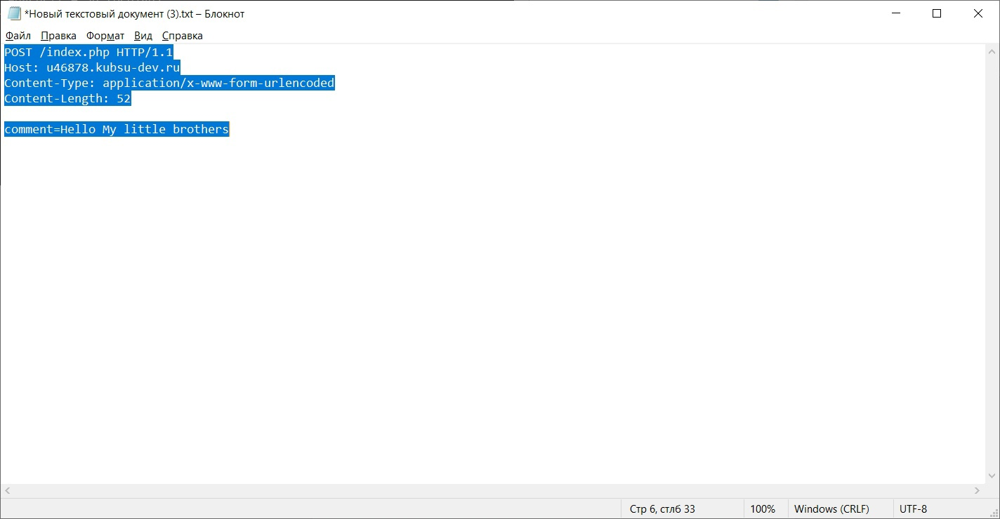
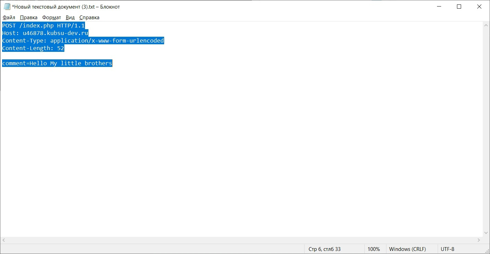
Получение первых 100 байт из файла file.tar.gz. Для их получения был использован GET запрос с заголовком Range
В заголовке Range указоно что нужно получить именно первые 100 байт из файла
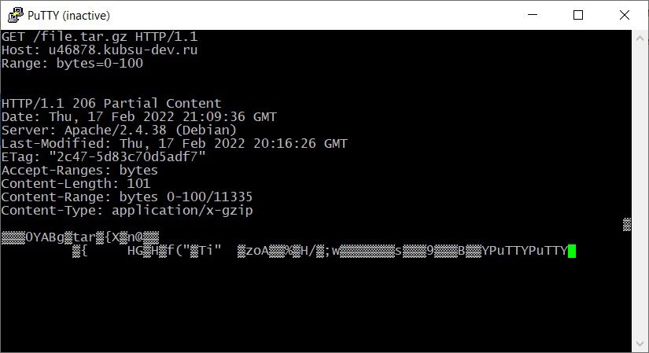
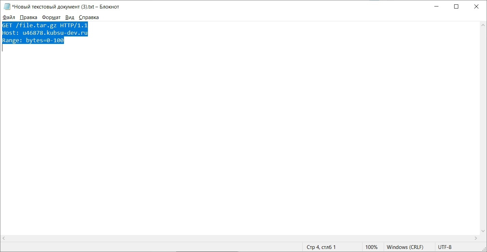
Определение кодировки файла index.php. Для этого был отправлен GET запрос с заголовком Accept-Charset, в котором была установлена кодировка utf-8
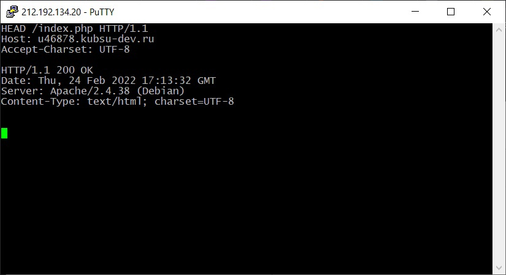
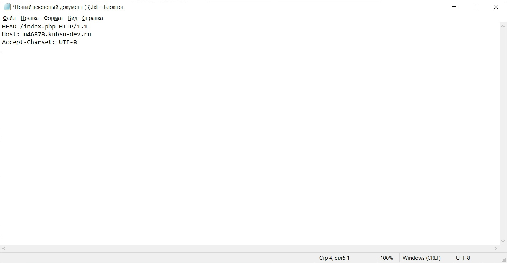